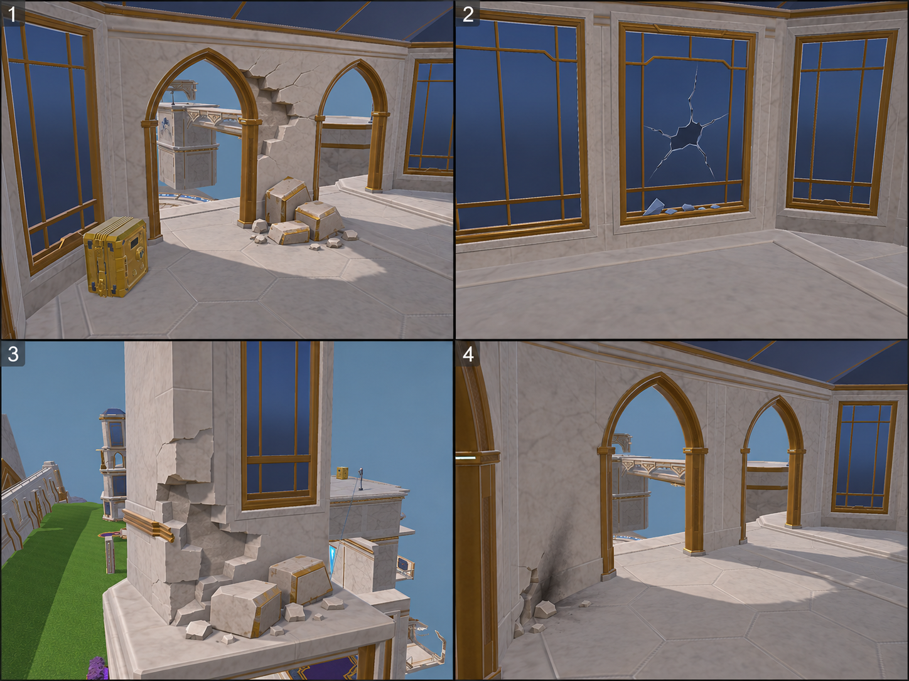

Mega City room damage pilot
Matched cameras in the Unity editor. The pilot moves the masonry to the jamb, restores neighbouring openings and confines glass damage to one pane.
Doorway at player height
Broken stone and fallen blocks
Impact within one glass pane
Art direction
Four concept studies for the wider city pass, including the lighter scorch treatment.
